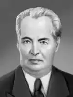

Андрій Упіт народився 22 листопада (4 грудня) 1877 року в селищі Скрівері (нині Айзкраукльський район). Під час Першої світової війни Упіт поневірявся по Росії і жив на Кавказі, працюючи табельщиком і конторником. У 1917 році Упіт був обраний у ризький рада робітничих депутатів і ризьку думу за списком соціал-демократичної партії. Під час окупації Упіт був арештований і утримувався у ризькій в'язниці. У 1919 році за радянської влади Упіт був завідуючим відділом мистецтва в Наркомосі Латвії. Разом з відступаючої Червоною армією Упіт переїхав у Радянський Союз, жив у Режіце, потім у Москві. Коли ж потім в 1920 році Упіт повернувся назад в Латвію, то він знову був арештований і посаджений в Ризьку центральну в'язницю. Тільки Установчі збори звільнило його.
Творча діяльність письменника почалася в 1899 році. Упіт був одним з найбільших представників реалістичного напряму в латиській літературі його часу. Письменник великого суспільного значення та соціальної насиченості, Упіт у своїх романах, новелах, оповіданнях і драмах нещадно розкривав експлуататорську сутність буржуазії, а також її обмеженість і вульгарність. Протягом всієї своєї літературної і громадської діяльності Упіт був завжди тісно пов'язаний з революційною демократією латиського народу, його симпатії завжди на боці пригноблених трудівників і знедолених.
На початку XX століття Упіт почав працювати над великою трилогією романів "Робежнікі" — найбільш значним своїм твором. У цій своїй трилогії Упіт задався метою показати, як під впливом капіталістичного розвитку і соціалістичного руху розшаровується патріархальна селянська родина. Вже в першій частині трилогії — "Нові джерела" ("Jauni avoti") — Упіт показав себе художником, абсолютно зрілим, великих творчих можливостей. Друга частина — "Z?da t?kl?" ("У шовкової мережі") — дає широку картину розшарування латиського суспільства і боротьби дрібнобуржуазно-інтелігентських і пролетарських тенденцій. Третя частина — "Zieme?u v?j?" (Північний вітер), що відноситься до періоду після революції 1905 року, показує спад революційного руху і боротьбу з реакцією після 1905 року. Наступний цикл романів: "Повернення Яна Робежніка" (1932), "Смерть Яна Робежніка" (1933), "Мартін Робежнік" і "Новий фронт", написаний після значного проміжку часу, є безпосереднім продовженням трилогії. Спільно з романом "Старі тіні", який самим автором названий як вступний роман до циклу, весь цикл складається з 8 романів і залишається неперевершеним у латиській літературі. Він створений великим художником-реалістом, художником-мислителем, тонко розуміє як відображаються їм суспільні процеси, так і психологію створюваних ним героїв. Вже своєю трилогією Упіт став в перших рядах латиської літератури як письменник реаліст-громадський працівник. Протягом 40-річної творчої діяльності Упіт написав ряд значних романів, з яких "P?rkonu piev?rt?" ("Під громами") і "Zem dzel?aina pap??a" ("Під залізною п'ятою") мають особливе значення; вони присвячені епосі після імперіалістичної війни; тут отримали своє відображення біженство, розорення латиського селянства під час імперіалістичної війни і німецької окупації в Латвії. Упіт також написано багато п'єс. Одна з найкращих — "Мірабо". Більшість його романів перевидано в Радянському Союзі. Також ряд романів ("Північний вітер", "Під громами" тощо) та п'єса "Мірабо" переведені на російську мову. Особливе місце займає серія сатиричних оповідань, присвячених сучасній буржуазній Латвії, де письменник дуже тонко і дуже гостро висміює правлячу верхівку панівного класу. Упіт належить також ряд критичних статей і двотомник "Історія латиської літератури", в якій багато явищ латиської літератури Упіт намагався осмислити з позицій марксизму. Дилогія "Земля зелена" (1945) про життя латиської села в 2-ій половині XIX століття та "Просвіт у хмарах" (1951) про перші кроки робітничого руху. Упіт перекладав твори О. С. Грибоєдова, М. В. Гоголя, М. Горького, А. Н. Толстого, В. Шекспіра, Г. Гейне, Б. Шоу, Г. Флобера, Г. Манна та інших. Громадська діяльність Упіта за радянських час була інтенсивною і різносторонньою: заступник голови (1940-1951) і член (з 1951) Президії ВР Латвійської РСР; голова правління СП Латвії (1941-1954). А. М. Упіт помер 17 листопада 1970 року в Ризі. НАГОРОДИ ТА ПРЕМІЇ Герой Соціалістичної Праці (1967) 4 інші ордени і медалі народний письменник Латвійської РСР (1943) Державна премія Латвійської РСР (1957). п'ять орденів Леніна Сталінська премія другого ступеня ( 1946) — за роман "Земля зелена" (1945) ЕКРАНІЗАЦІЇ І ФІЛЬМИ ЗА МОТИВАМИ ТВОРІВ 1956 — Причини і наслідки (режисери Варіс Круміньш та Маріс Рудзітіс, за однойменним романом). 1969 — У багатої пані (режисер Леонід Лейманіс, за романом "Усміхнений лист"). 1987 — Якщо ми все це перенесемо (режисер Роланд Калниньш, за мотивами трилогії "Робежніекі"). 1981 — На межі століть (режисер Гунар Піесіс, за мотивами романів "Під панської батогом" та "Перша ніч ").